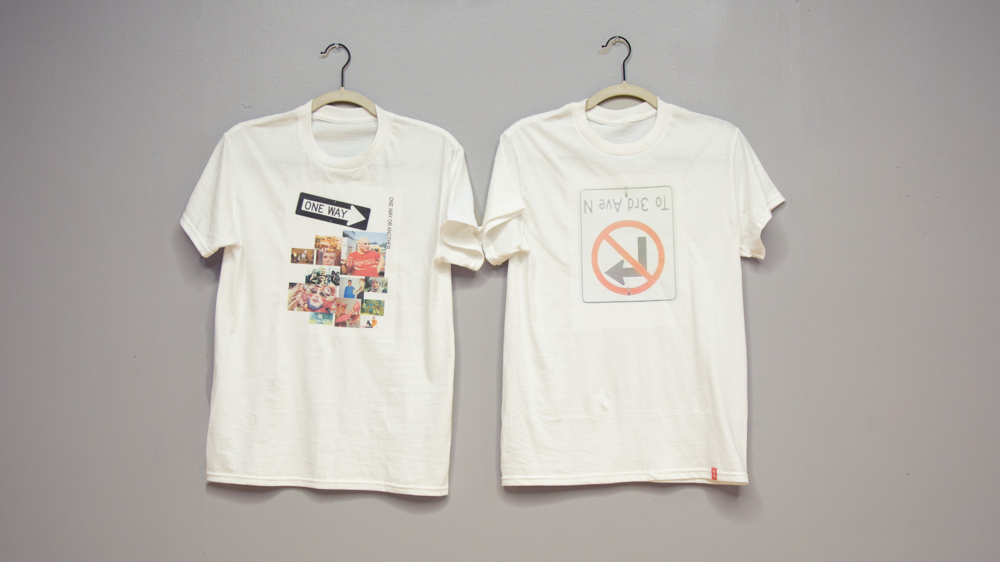
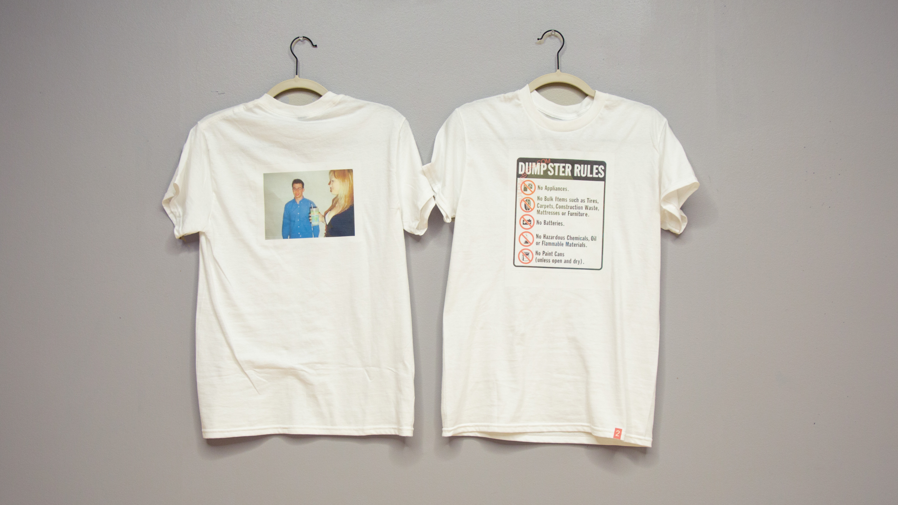
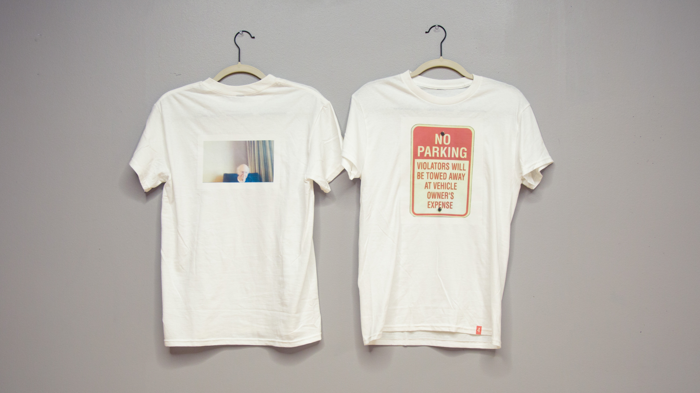
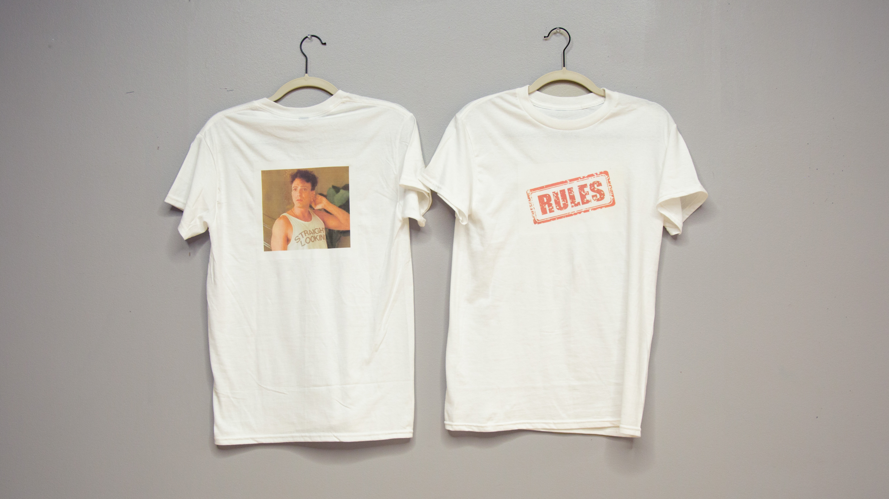
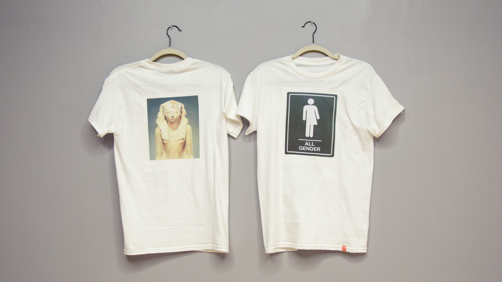
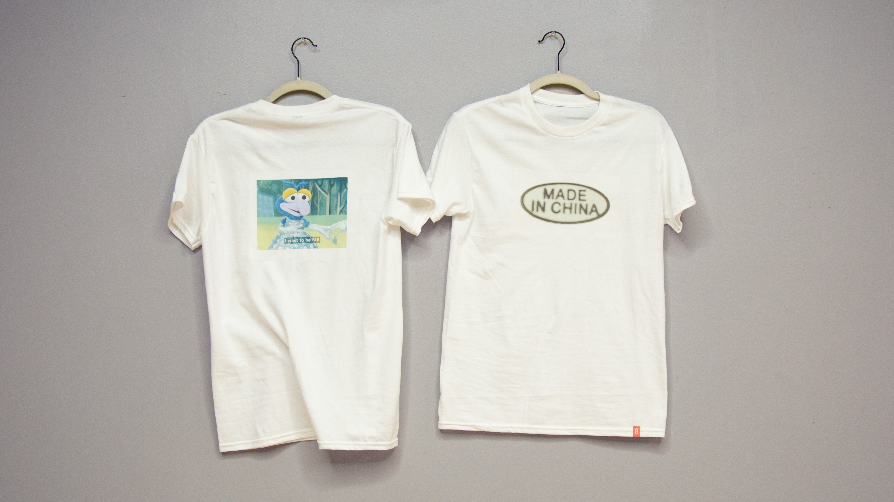
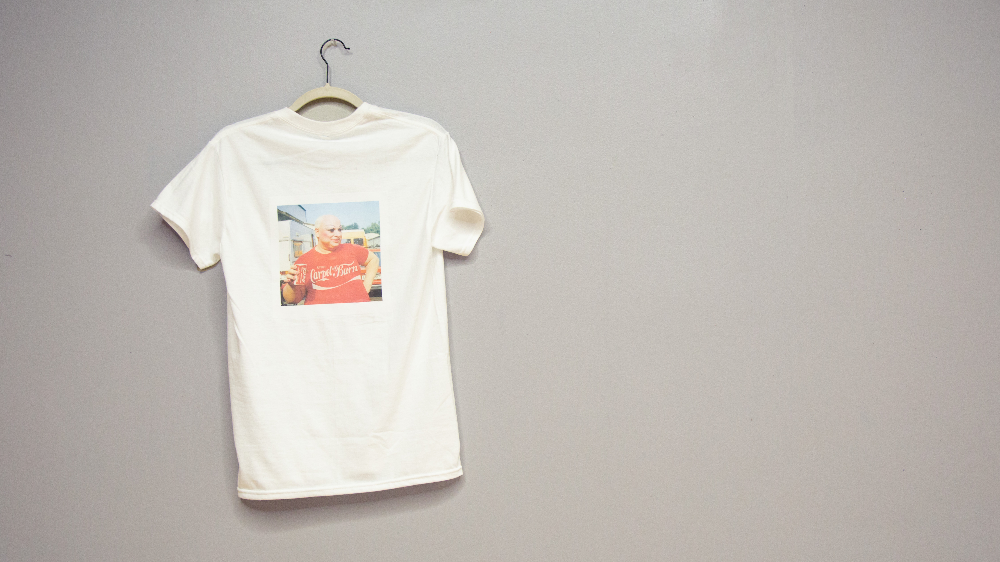

One way or another
This is 11 pieces of T-shirts in sequence, or an artist's book.
Exploring the statement and self expression that comes from a simple piece of clothing, versus the rigid and direct nature of street signs.
How different is a "no parking" sign than a shirt that says "I love nyc?" What do they both inform the others?